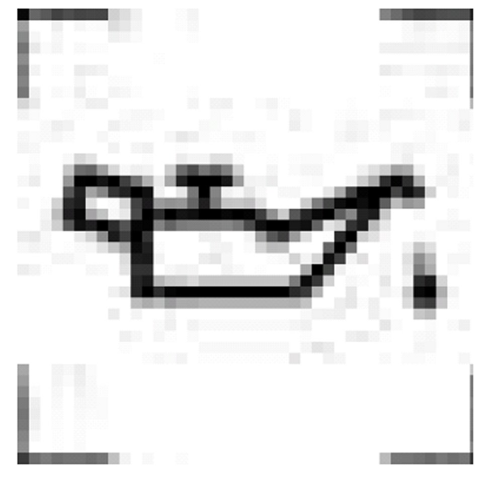
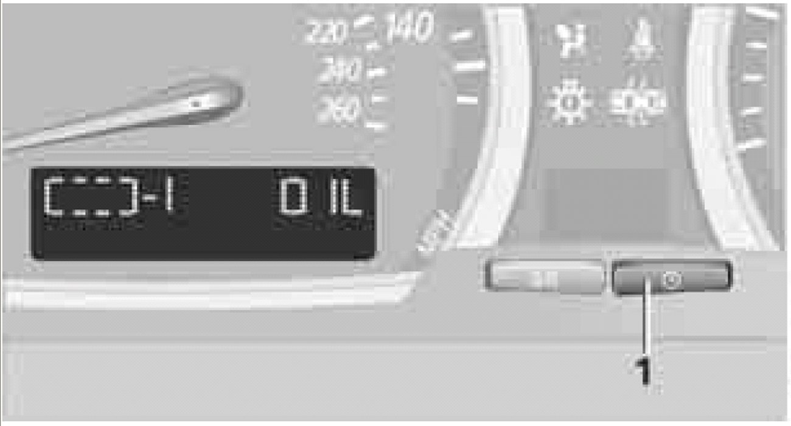
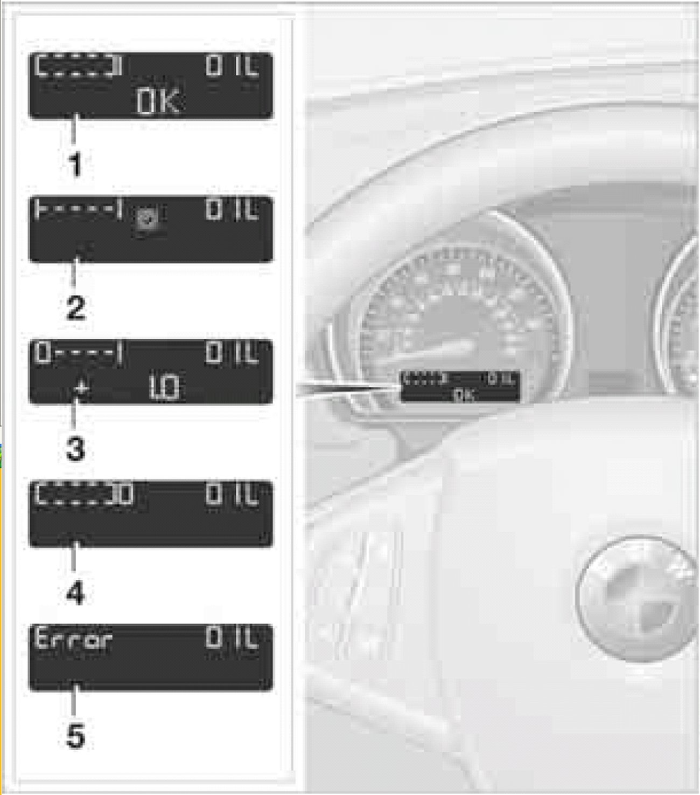

Checking Engine Oil Level
Checking engine oil level
Engine oil level

The warning lamp lights up yellow during driving. An acoustic signal also sounds and " +1.0 " is displayed in the instrument cluster. The oil level is at its absolute minimum; top off engine oil as soon as possible. Until then, do not drive more than approx. 125 miles/ 200 km.
The warning lamp lights up yellow after the engine is switched off. In addition, a signal sounds. Top off engine oil at the earliest opportunity, e.g. with you next refuelling.
The warning lamp lights up yellow within 30 seconds after starting the engine: The oil level sensor has failed. It is not possible to take a current or meaningful measurement. Have the system checked as soon as possible.
Checking oil level
This vehicle is equipped with an electronic oil level control.
For the most precise possible display of the oil level, the engine must be at operating temperature, i.e. after at least 6.5 miles/ 10 km of uninterrupted driving. You can have the oil level displayed while you drive or while the vehicle is standing on a level surface with the engine running.
The current oil level can be viewed on the instrument cluster.

- Press button 1. The oil level is checked and displayed for approx. 15 seconds.
- In order to cancel the display early, press button 1 again.
POSSIBLE DISPLAYS

1 Oil level OK
2 Oil level is being detected
This process can last approx. 3 minutes while standing on a flat surface and approx. 5 minutes while driving.
3 Oil level at minimum
At your earlies opportunity, add 1 US quart/ 1 liter engine oil.
4 Oil level is too high
CAUTION!! Have the vehicle checked immediately; otherwise, overfilled oil can lead to engine damage.
5 Oil level sensor has failed
It is not possible to take a current or meaningful measurement.
Do not add engine oil. It is possible to continue driving. Have the system checked as soon as possible.
NOTE: Only use approved BMW High Performance Synthetic Oil. If BMW High Performance Synthetic Oil is not available, you can add small quantities of other synthetic oils in between oil changes. Only use oils with API SH specification or higher.